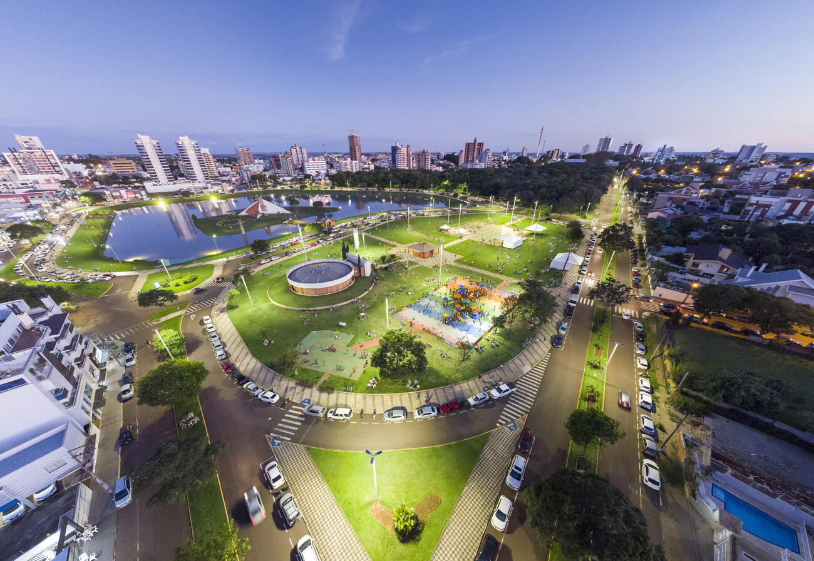
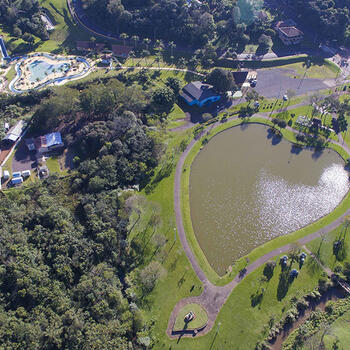

Toledo began to be colonized on March 27, 1946, when the first pioneers arrived in the region and started building the first houses. Among the first families were the Ruaro and Dalcanale families, who brought other families from Rio Grande do Sul to take part in the colonization.
The name Toledo is related to the Toledo Stream (Arroio Toledo) and the old Pouso Toledo (Toledo Rest Stop), a place used as a resting point by muleteers who transported goods, mainly yerba mate. According to accounts from the pioneers, the rest stop was run by a man named Toledo.

Toledo originally belonged to the municipality of Foz do Iguaçu. Its emancipation took place on November 14, 1951, through State Law No. 790. The municipality was officially installed on December 14, 1952, after the first municipal elections were held.
In the first elections, held on November 9, 1952, Ernesto Dall’Oglio was elected, the first mayor of Toledo. The first City Council had nine councilors, with Güerino Antônio Viccari as its first president.
Over the following decades, Toledo grew and came to play an important role in the development of western Paraná. The municipality's expansion also contributed to the emergence of new cities, such as Marechal Cândido Rondon, Palotina, Assis Chateaubriand, Nova Santa Rosa, Ouro Verde do Oeste, and São Pedro do Iguaçu.
Toledo's economy developed mainly through agriculture and livestock, agribusiness, and industry, as well as commerce and the pharmaceutical sector. The city also gained national prominence for its pork production and its strong connection to agriculture.
Toledo has many tourist, cultural, and natural attractions. Among them are the Diva Paim Barth Ecological Park, waterfalls, trails, the Historical Museum, the Casa da Cultura (House of Culture), the Municipal Theater, and the Ismael Sperafico Events Center.
One of Toledo's main cultural trademarks is the Festa Nacional do Porco Assado no Rolete (National Spit-Roasted Pork Festival), a tradition that helped the city become known nationwide as the “Spit-Roasted Pork City”. The cuisine tied to the dish also contributed to the municipality's tourism development.
Today, Toledo is an important economic, educational, technological, and agroindustrial center in western Paraná. The city also has higher education institutions and is home to Biopark, which contributes to the formation of an innovation, technology, and development hub.
Source of the informationMulticulturalism is the coexistence of different cultures within the same society. These cultures may differ in language, religion, customs, traditions, food, and forms of expression. Multiculturalism values this diversity and defends respect for cultural differences.
Respecting different cultures is important for combating prejudice, discrimination, and intolerance. Each group has its own history and customs, which should be recognized without any culture being considered superior to the others. Coexistence among different peoples also allows for the exchange of knowledge and experiences.
Brazil is a multicultural country, formed by the contribution of many peoples, such as Indigenous peoples, Africans, Europeans, and immigrants from different regions of the world. This diversity appears in the cuisine, music, popular festivals, religions, and traditions found in different parts of the country. However, prejudice and inequalities still exist and need to be addressed.
In Toledo, cultural diversity can be seen in the traditions of the families who contributed to the formation of the municipality, in the cuisine, in the festivals, and in cultural expressions. The presence of different origins and customs contributes to the city's identity. Valuing this diversity is a way to preserve local history and encourage respect among residents.
Cultural inclusion seeks to ensure that all people can express their traditions and identities without suffering discrimination. School, family, and community play an important role in this process, promoting dialogue, equality, and respect. In this way, multiculturalism contributes to a fairer society, in which differences are recognized and valued.